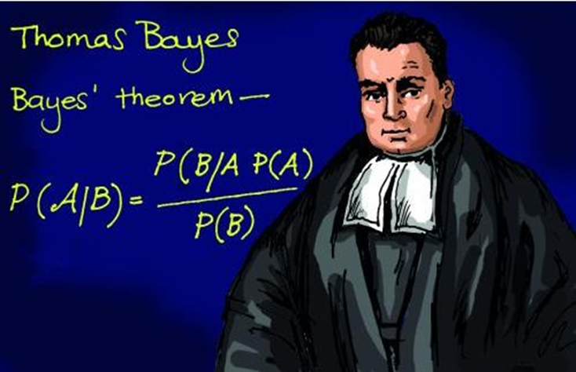
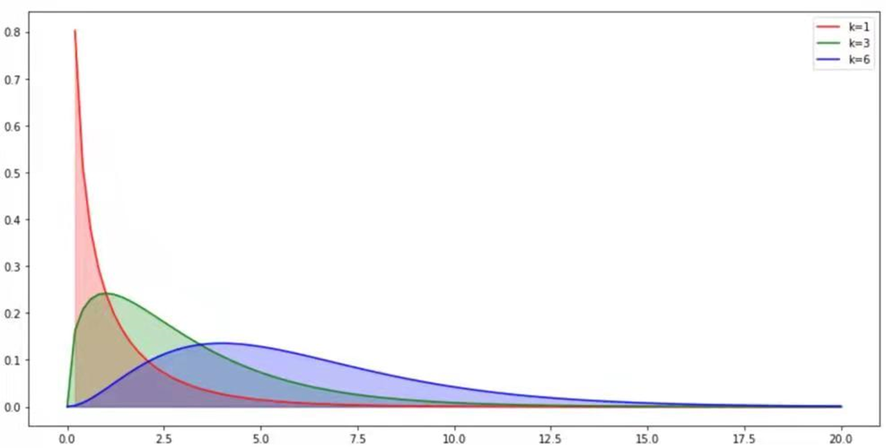
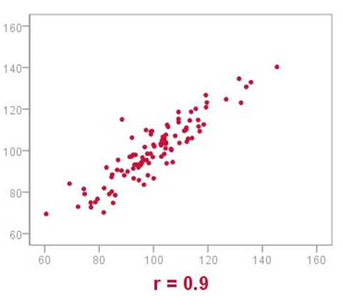
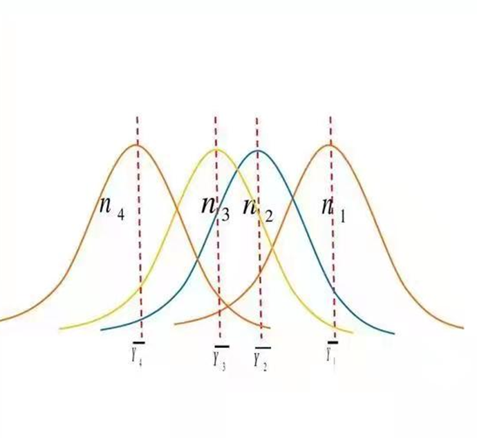
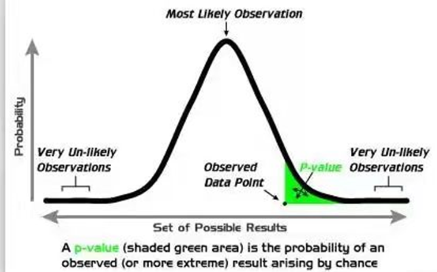
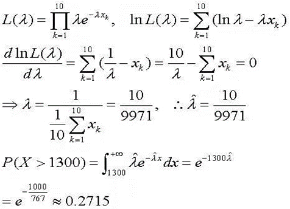
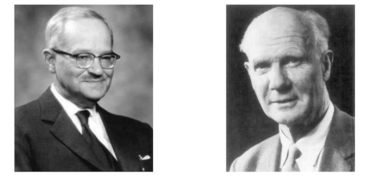
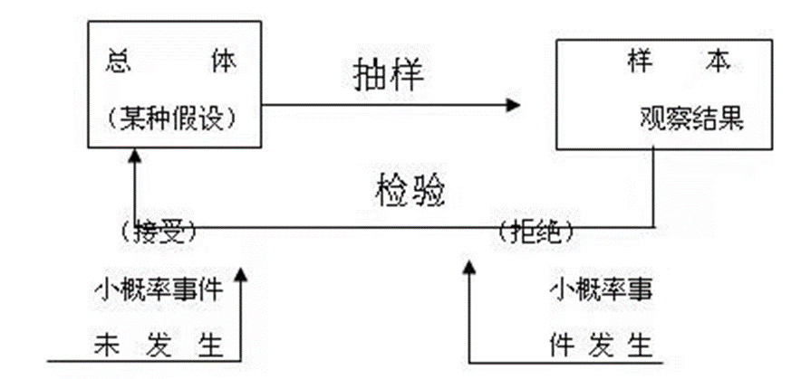

“统计(statistics)”
亚里士多德
国情调查(State of the Nation Survey):
“统计(statistics)”
 政治算术
政治算术
“统计(statistics)”
政治算术(Political Arithmetic)：
“This book does not use comparatives or superiors for thought or argument, but uses numbers to express what it wants to say, by which it examines the causes that have a visible basis in nature.” William Allotey writes.
贝叶斯(Bayes)
贝叶斯(1702-1763)

\(p(A|B) = \frac{p(B|A)p(A)}{p(B)}\)
1763 修建圆明园
1783 美国独立
高尔顿(Galton)
1840 第一次工业革命完成
1859 达尔文发表《物种起源》
辛亥革命
回归分析
在生物统计学实验室，他收集了家庭成员的身高、体重、特定骨骼的测量值和其他特征。
他和他的助手们将这些数据制成表格，并对它们进行检查和重新检查。
通过这种方式，高尔顿发现了一个他称之为 “向平均值回归”的现象。
(Salsburg, David, (2001), THE LADY TASTING TEA)
戈塞特
William Sealy Gosset
统计学家
学生氏(student)
小样本原理
1870 第二次工业革命完成
1937 卢沟桥事变
t检验
(Salsburg, David, (2001), THE LADY TASTING TEA)
卡尔·皮尔逊(Karl Pearson)
Karl Pearson
数学家、生物统计学家、数理统计学家
现代统计科学的奠基者
拟合优度检验(Goodness of fit)
通过比较观察值(observed value)和预测值(predicted value)，皮尔逊能够使用一个统计数据来计算拟合度。

(Salsburg, David, (2001), THE LADY TASTING TEA)
皮尔逊相关(Pearson correlation)
皮尔逊相关系数用于衡量两个变量X和Y之间的相关关系（线性相关），其数值在-1和1之间。
\(p_{X, Y} = \frac{cov(X, Y)}{\sigma_X\sigma_Y} = \frac{E[(X-\mu_X)(Y-\mu_Y)]}{\sigma_X\sigma_Y}\)

方差分析(Analysis of Variance, ANOVA)
方差分析用于检验两个或多个样本的平均值之间的差异的显著性。

p值(p-value)
R. A. Fisher开发了现在普遍使用的大多数显著性检验方法。他把允许人们报告显著性的概率称为 “P值”。

(Salsburg, David, (2001), THE LADY TASTING TEA)
极大似然法(Maximum likelihood estimator, MLE)
在研究数学的过程中，Fisher意识到，Karl Pearson用来计算其分布参数的方法所产生的统计数据不一定是一致的，而且往往是有偏见的，还有更有效的统计数据可以利用。为了产生一致和有效的（但不一定是无偏的）统计数据，Fisher提出了极大似然法。

(Salsburg, David, (2001), THE LADY TASTING TEA)
内曼和皮尔逊(Neyman & Egon Pearson)

假设检验(Hypothesis testing)
为了区分用于计算Fisher P值的假设和其他可能的假设，内曼和皮尔逊将被用来验证的假设称为 “虚无假设”，将其他假设称为 “备择假设”。

(Salsburg, David, (2001), THE LADY TASTING TEA)